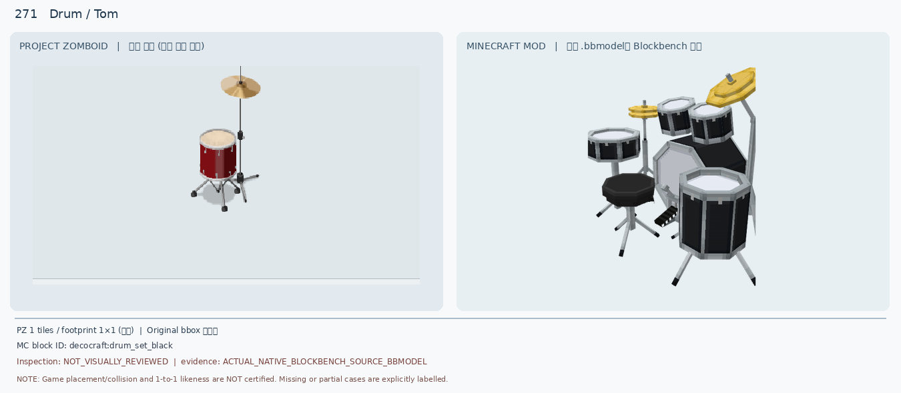
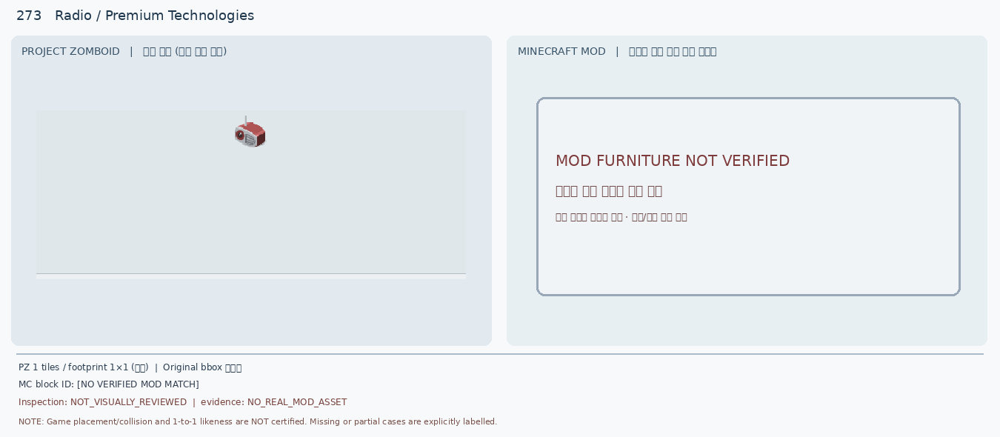
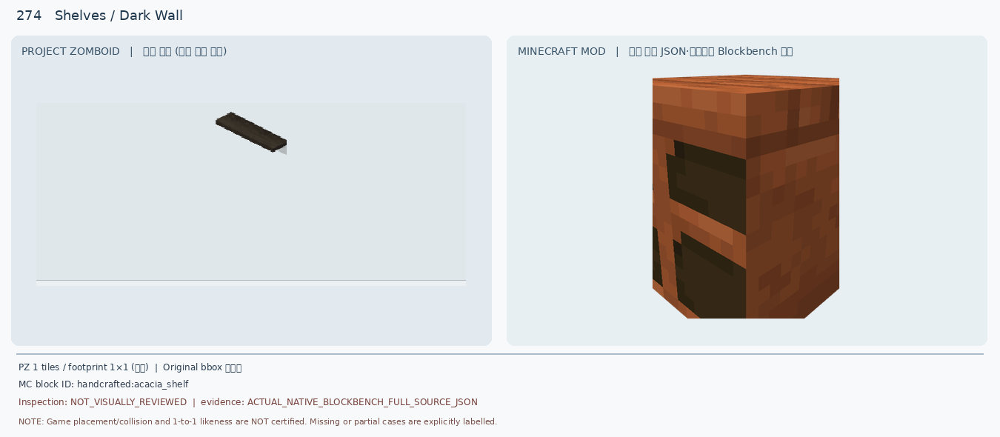
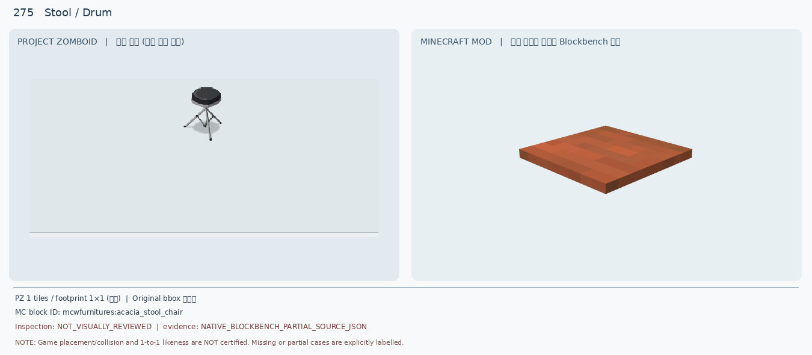
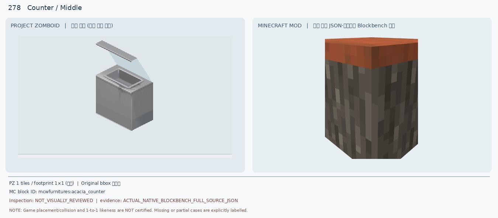
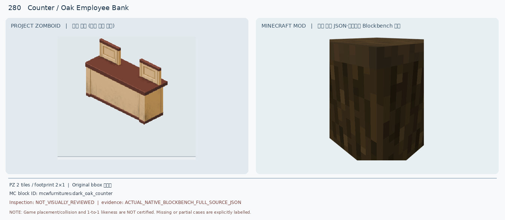

271 Drum / Tom

단일 빨간 탐+심벌과 검정 전체 드럼 세트의 색상·개수·크기 불일치
ACTUAL_NATIVE_BLOCKBENCH_SOURCE_BBMODEL · decocraft:drum_set_black10종 모두 보류 · 기존 비교 JPG 재판독 · 신규 Blockbench 렌더 0개

단일 빨간 탐+심벌과 검정 전체 드럼 세트의 색상·개수·크기 불일치
ACTUAL_NATIVE_BLOCKBENCH_SOURCE_BBMODEL · decocraft:drum_set_black
아케이드 실루엣만 비슷하고 게임 화면·색상·상단 형태가 다름
ACTUAL_NATIVE_BLOCKBENCH_SOURCE_BBMODEL · decocraft:arcade_machine_pacman
원본 모드 자산이 없어 시각 대조 자체가 불가
NO_REAL_MOD_ASSET · No MC source
부유 판자와 두꺼운 수납형 가구의 구조·색·두께 불일치
ACTUAL_NATIVE_BLOCKBENCH_FULL_SOURCE_JSON · handcrafted:acacia_shelf
재질·좌판 모양 불일치, 부분 렌더이므로 완전 모델 판정 불가
NATIVE_BLOCKBENCH_PARTIAL_SOURCE_JSON · mcwfurnitures:acacia_stool_chair
목재 상판·길이·다리 구조 미재현, 부분 렌더
NATIVE_BLOCKBENCH_PARTIAL_SOURCE_JSON · mcwfurnitures:acacia_glass_table
의료 진찰대와 가죽 안락의자 후보가 다르고 2×1 점유 미충족
NATIVE_BLOCKBENCH_PARTIAL_SOURCE_JSON · pfm:arm_chair_leather
유리 덮개·금속 용기·내부 공간이 전혀 없음
ACTUAL_NATIVE_BLOCKBENCH_FULL_SOURCE_JSON · mcwfurnitures:acacia_counter
이동식 바퀴·트레이·금속 지지대 모두 누락
ACTUAL_NATIVE_BLOCKBENCH_FULL_SOURCE_JSON · mcwfurnitures:acacia_counter
2×1 점유·투톤 색상·위쪽 칸막이 두 개 전부 불일치
ACTUAL_NATIVE_BLOCKBENCH_FULL_SOURCE_JSON · mcwfurnitures:dark_oak_counter